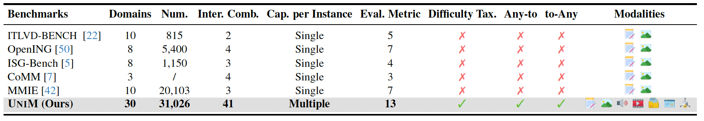
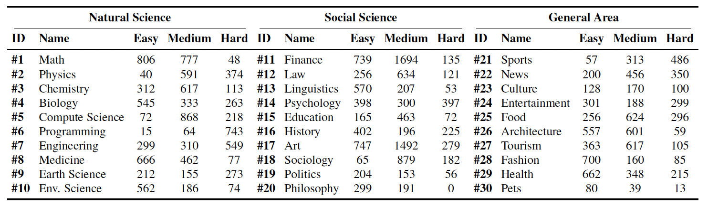
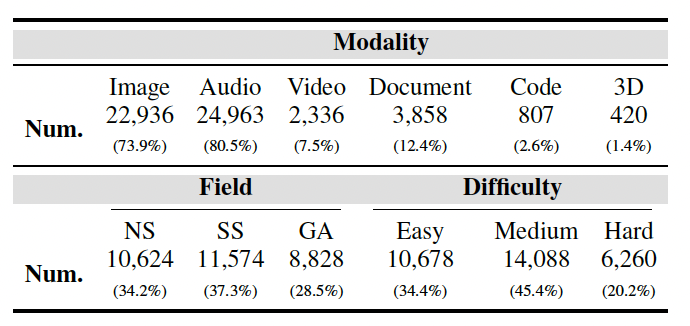
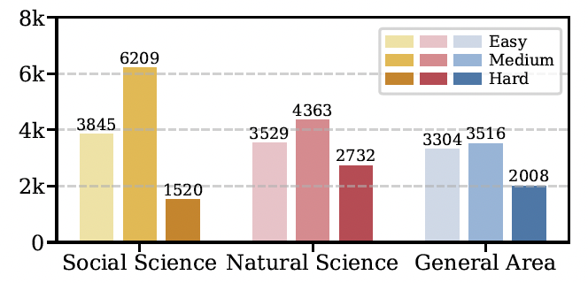

In real-world multimodal applications, systems usually need to comprehend arbitrarily combined and interleaved multimodal inputs from users, while also generating outputs in any interleaved multimedia form. This capability defines the goal of any-to-any interleaved multimodal learning under a unified paradigm of understanding and generation, posing new challenges and opportunities for advancing Multimodal Large Language Models (MLLMs). To foster and benchmark this capability, this paper introduces the UniM benchmark, the first Unified Any-to-Any Interleaved Multimodal dataset. UniM contains 31K high-quality instances across 30 domains and 7 representative modalities: text, image, audio, video, document, code, and 3D, each requiring multiple intertwined reasoning and generation capabilities. We further introduce the UniM Evaluation Suite, which assesses models along three dimensions: Semantic Correctness & Generation Quality, Response Structure Integrity, and Interleaved Coherence. In addition, we propose UniMA, an agentic baseline model equipped with traceable reasoning for structured interleaved generation. Comprehensive experiments demonstrate the difficulty of UniM and highlight key challenges and directions for advancing unified any-to-any multimodal intelligence.
Inter. Comb.: Interleaved combinations of modalities. Cap. per Instance: Capability per instance. Difficulty Tax.: Difficulty taxonomy.




We collect images from various sources such as COCO, Flickr30k, nocaps, MIMIC, RVL_CDIP, ScienceQA, and manually collected Traffic Reports. Visual details for each image are extracted using GPT-4o, ensuring diverse and fine-grained descriptions. We carefully select non-trivial logical inference rules, such as Modus Ponens and Hypothetical Syllogism, drawn from propositional logic (PL), first-order logic (FOL), and non-monotonic logic (NM). These rules then form meaningful but abstract reasoning chains through logical combinations. The abstract chains are grounded in real-world contexts by leveraging extracted visual features and relevant retrieved text from sources like healthcare, traffic reports, and Wikipedia. Questions and answers are then generated based on these instantiated reasoning chains, using rule-based substitution.
To ensure the quality and relevance of the dataset, both automatic and manual quality control procedures are employed. Automatic checks include assessing lexical similarity and commonsense plausibility, while human annotators verify the accuracy of visual details and the real-world relevance of the generated context. Instances that fail these checks are filtered out, ensuring a high-quality, logically sound, and contextually relevant dataset.

Figure: Data construction pipeline and quality control overview (placeholder).
.png)